Twenty-five years of thinking about how to rethink the tricky bits: the trading platform, the regulator, the offshore dev team, the restructure, the 5,000 people in a desert. I'm the person who goes and finds out how the thing actually works and then brings the step change.
Today that means Figabl, where we buy inventory at its expected value and sell it back when needed, so product founders can scale what already works. Before it: US wide pharmaceutical verification for the FDA, lifecycle tracking for inventory, and electronic trading at UBS. Also a whitewater raft guide, outdoor instructor, corporate facilitator, and a ski instructor who rethinks the fundamentals to help adaptive athletes excel in the mountains.
Platforms that have to survive regulators, auditors and a Monday morning. Trading infrastructure, product verification, payment rails, expected value engines. I can hold the technical roadmap and the P&L in the same conversation.
Contraction is its own skill. I have taken a 6,200-person luxury retailer down to 5,052 without the wheels coming off, and made a family conglomerate profitable by saying no to most of it.
Boards, the FDA, stock exchanges, industry associations, journalists, and a field of 5,000 festival-goers. Mostly the same job: say the true thing early, in language the room can act on.
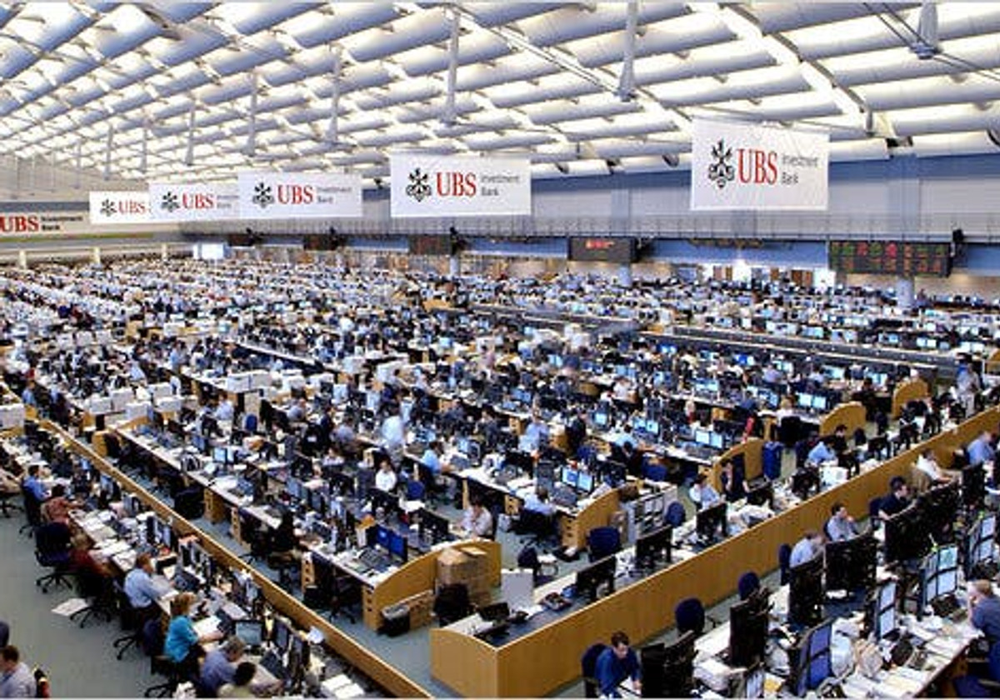
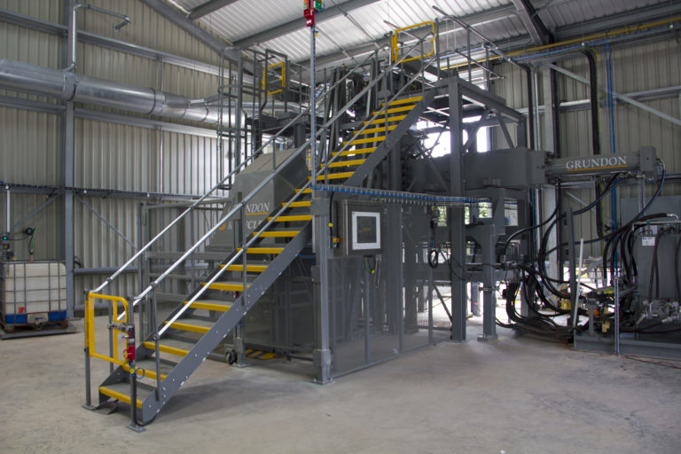
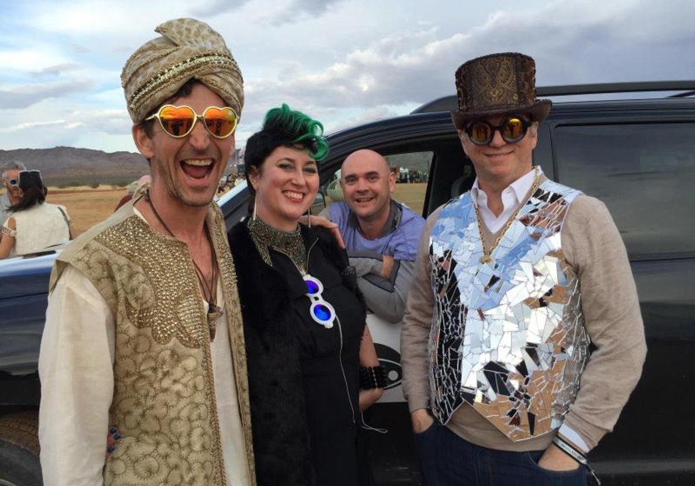
We value inventory by sales, not cost — buying e-commerce stock where it already sits in the seller's 3PL, selling it back as they need it, no margin charged. It lets a founder scale beyond their bank's idea of them, without dilution or delay. Billions of dollars of sales analyzed, hundreds of millions financed. Zero defaults to funders.
The first live Verification Router Service for US pharmaceuticals, so any packet could be checked under the Drug Supply Chain Security Act. Led an Accenture development team, worked alongside Deloitte, co-wrote the industry test scripts, presented to the FDA and worked with every major manufacturer. National Science Foundation recipient.
Machine-to-machine billing for IoT devices. The token generation event raised $256M, which was a great deal of money to watch arrive in a single afternoon.
Restructuring Asia's leading purveyor of luxury goods against the e-commerce threat. Interviewed every senior manager, ran the change management, reported progress to the chair.
Creative Collisions, executed. Ran front of house across two festivals — 5,000+ attendees, 240 staff, temporary accommodation, and the crisis management that comes free with both.
Asia's largest outdoor educator and management trainer: ran five divisions, 120+ staff, 30,000 programme days a year including all of Disney's experiential learning in Asia. Net margins up 51% on cost control and product focus, with standardised reporting and safety procedures group-wide.
Licensed Greenpeace-approved medical waste treatment and sold it into Europe's largest private waste processor and Metro Manila — taking the dioxin out of London hospital waste, still processing two tonnes an hour today. Alongside it, compostable packaging for Hong Kong's better-known cafés, retailers and cosmetics brands.
Independent board member of the southern hemisphere's largest secure printer: government documents and postage stamps. Strategy and oversight.
One firm under four names — SBC Warburg, Warburg Dillon Read, UBS Warburg, then UBS. Graduate recruit to architect and business owner of the electronic trading platform in Asia, handling over 80% of the bank's electronic equity flow across Asia Pacific and Australia. First web-based trade onto the London Stock Exchange, first international electronic order onto the NYSE, negotiations with the Korean, Singaporean and Hong Kong exchanges, and a hand in the international technical trading standards.
Class IV+ whitewater in California, wilderness logistics for Outward Bound Australia, and five summers teaching kayaking and climbing to disabled and disadvantaged kids in Wales. Still the best training I have had. SNOW & WATER →
Financial representative and dealing licences: SFC Hong Kong, FSA London (both lapsed — I stopped needing them). US patent holder.
Hands-on with accounting and cloud project stacks, and genuinely useful in Figma, Illustrator, Sketch and SketchUp — which means the roadmap deck and the wireframes are usually mine.
Adaptive ski instructing, volunteer for the charity and paid by Whistler Blackcomb. Helped out at the Winter Invictus Games.
Badminton coach at the local secondary school. Previously CSR Sowers Exchange advisory board, Hong Kong.
Things that happened, in the order they happened. Some of them were even the plan.
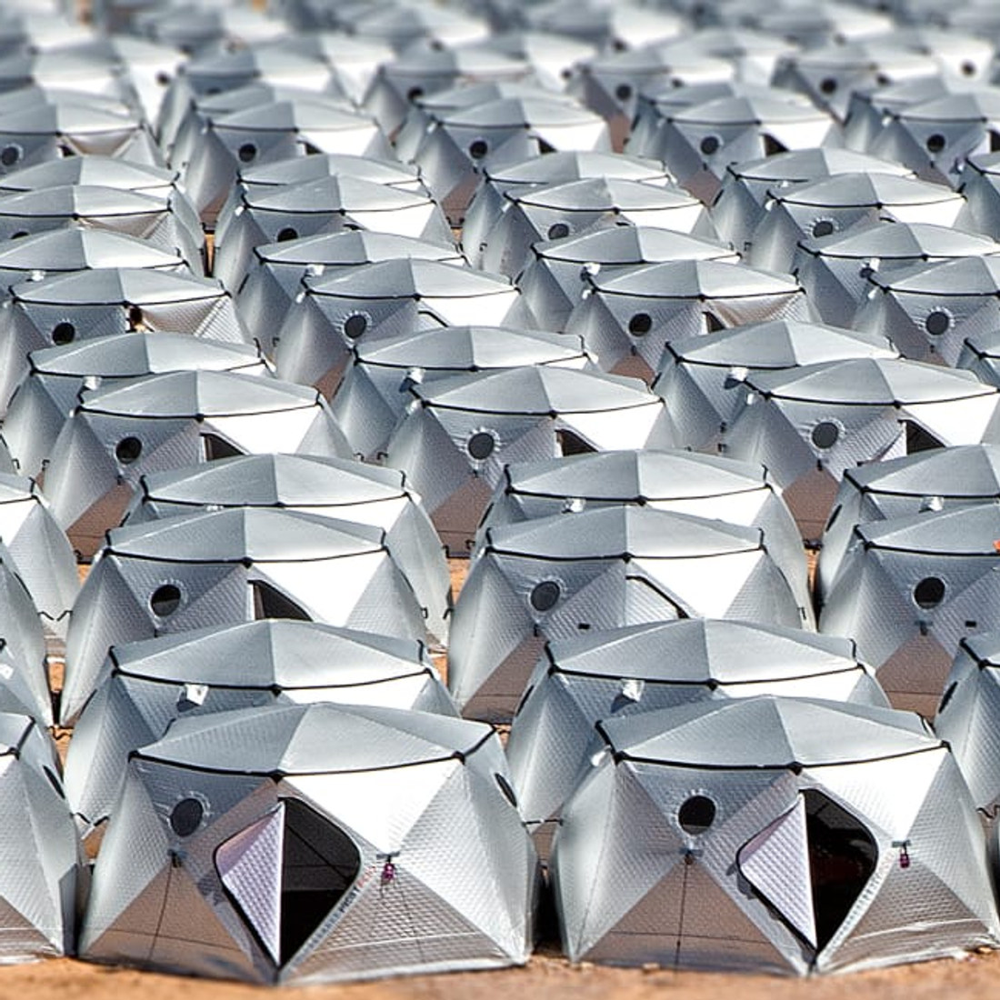
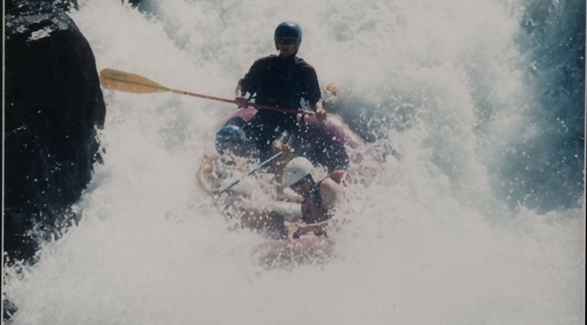
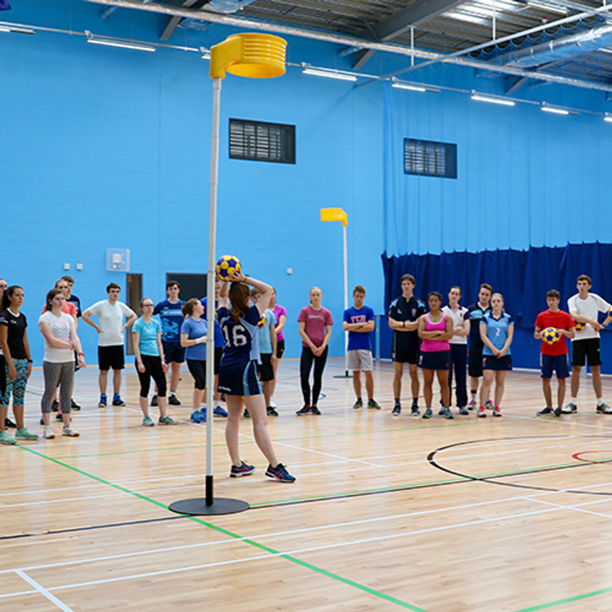
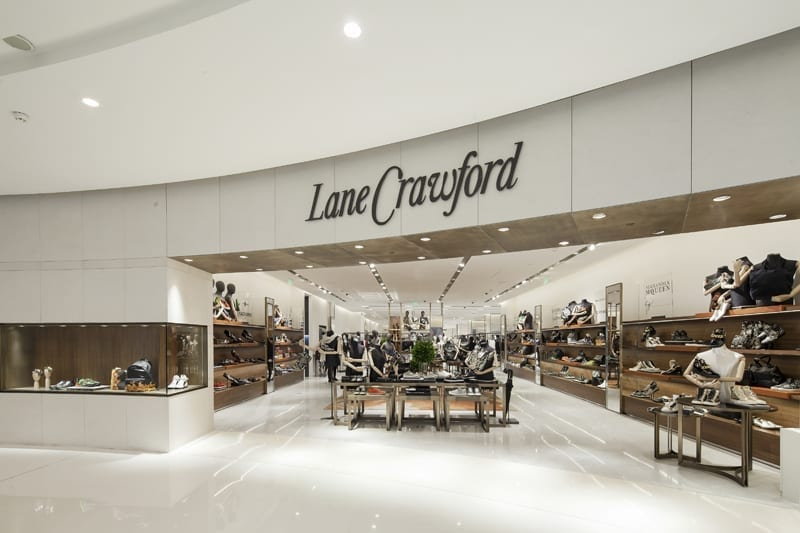
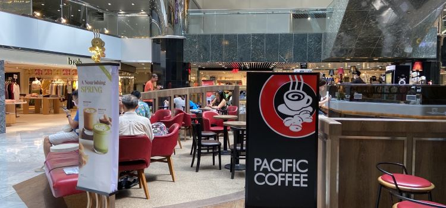
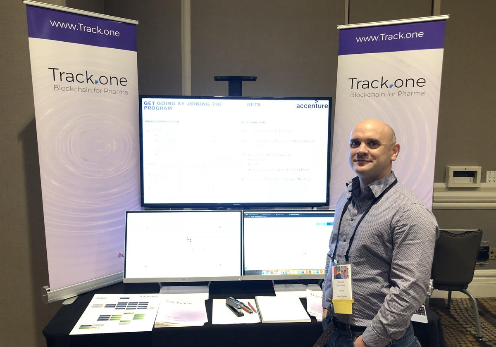
Six inventions in product identification, verification, inventory tokenisation and pooled capital. One granted, the rest published and deliberately unclaimed. I would rather they were used than litigated. No licence, no fee, no conversation required — though I am happy to have one. Each one below is readable as a typeset claim, with the original filing alongside it.
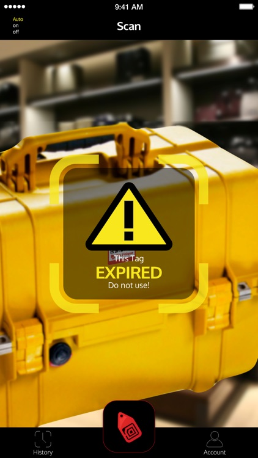
Identification codes generated from line-of-item data, affixed and then scanned before distribution so only real, shipped codes are flagged active. A shopper scanning with a phone gets a straight answer on whether the unit is genuine, or a route to someone at the manufacturer who can tell them.
US9076024B2.pdf →Universal labelling standards let a bad actor predict the identifiers of next month's production run and print perfectly plausible fakes. Randomising serials within the standard, without collisions, removes the guess.
Route verification messages to the manufacturer's public domain or subdomain, and let them redirect to their own service or their provider. Whoever answers the question demonstrably controls the brand's front door.
Two parties who will not share their records can still share the state of a single item: present an obscured but identical identifier and, if your credentials hold, you learn the status of the thing you already knew about. Nothing else leaks.
In a pooled capital structure, your rate should improve as the capital ahead of you exits — no lockups, no penalties, nothing to claim. The hard part is arithmetic: recomputing every position on every exit is unaffordable on-chain. An order-statistic tree and deferred settlement bring the cost down to logarithmic per exit.
Representing real inventory on-chain without minting a token per unit. Group like with like, and guarantee the count, the consideration and the age profile of what sits underneath is the same or better than at issuance — so restocking cannot quietly swap long-dated goods for short-dated ones.
Every claim as a standalone document, every figure as vector art, and the original filings as lodged — including the granted patent. No attribution needed, though I would enjoy hearing what you build.
The other, serious fun, half of the CV. Thirty years of taking people somewhere slightly harder than they expected and bringing them back pleased about it. It is the same work as the boardroom, with better weather and clearer consequences.
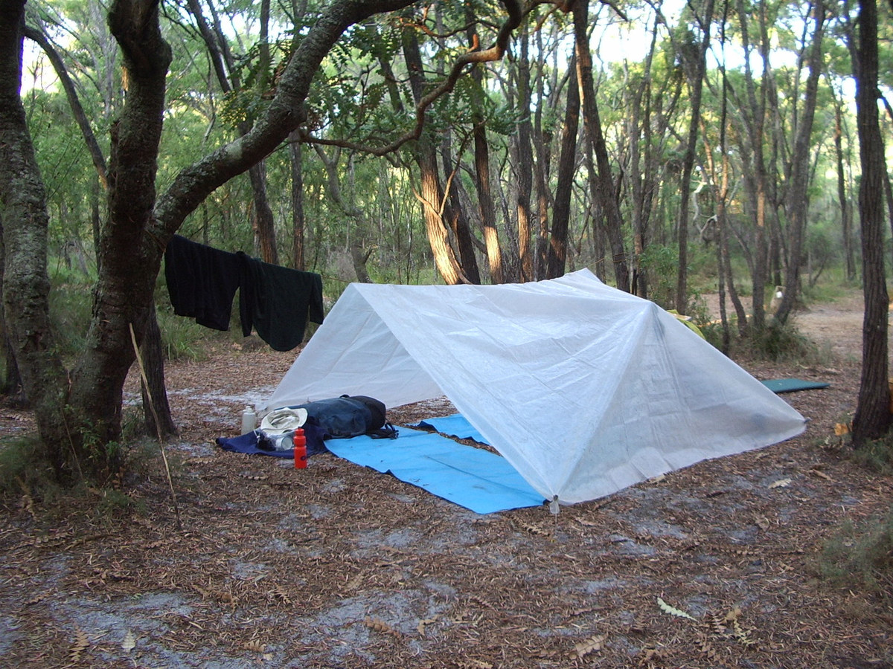
Part-time professional: paid by Whistler Blackcomb, and volunteering with the Whistler Adaptive Sports Program.
In 2025 I helped coach athletes ahead of the first winter hybrid Invictus Games here in the Sea to Sky, then got to meet them on a finish line they had been aiming at for months. The most committed people I have worked with, in any industry. Smiles I will keep.
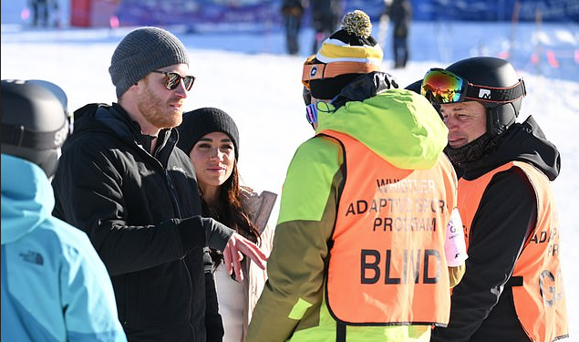
Also badminton coach at the local secondary school, on the theory that a sport you can play indoors in November has its merits.
A proper mountain day for athletes of every ability. Invictus Games coaching in 2025.
Every onsite aspect of delivery for 5,000+ attendees across two residential festivals, leading a team of 240.
Asia's largest outdoor education group. Five divisions, 120+ staff, 30,000 programme days a year, all of Disney's experiential learning in Asia — and group-wide standard operating procedures so the safety case did not depend on who was rostered.
Class III, IV and IV+ rivers, overnight and multi-day trips, four summers.
ADHD/ADD camps and rather more expensive camps, UK and USA.
Logistics coordinator for 5 to 30-day wilderness expeditions. Sir Vincent Fairfax Scholar.
Climbing, kayaking, swimming, mountain biking, archery and team building for disabled and disadvantaged young people. Where all of this started.
Best on LinkedIn — that is also where the resume stays current. Founders, funds and anyone with an awkward technical problem: I read everything.